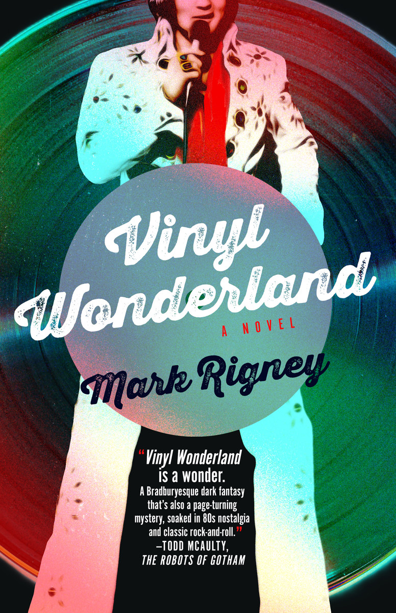

Our Catalog / Vinyl Wonderland

Vinyl Wonderland
“Vinyl Wonderland is a wonder. A Bradburyesque dark fantasy that's also a page-turning mystery, soaked in 80s nostalgia and classic rock-and-roll. There are more twists in this book than a Joe Jackson record. Brendan Purcell is a fabulous character, a wide-eyed narrator caught up in a sinister small-town nightmare, burdened with his own tightly-held secrets. Vinyl Wonderland is the best contemporary fantasy I've read it years. It is destined to be a classic.” -- Todd McAulty, author, The Robots of Gotham
“Splendid, inventive, compelling, and surprising, Rigney knows how to seize and hold his readers.” -- Howard Andrew Jones, author of The Ringsworn Trilogy and Lord of a Shattered Land
Welcome to Vinyl Wonderland
Think 11/22/63 meets David Lynch-- a young 1980s record-store manager mourning the death of his mother at Christmastime discovers a doorway that leads to an infinite wasteland of cast-off junk; once there, he discovers he can choose one item and one only: what he needs, or what he wants.
It's 1984, and when record shop owner Karl Wickett suffers an unexpected stroke, high school drop-out Brendan Purcell finds himself in charge of Vinyl Wonderland. Having recently lost his mother to a freak accident, Brendan quickly discovers that Vinyl Wonderland's back door leads to a haunted, infinite world of cast-off junk and trash, where visitors can take one thing and one thing only: what they want, or what they need. Eager to help his mourning, alcoholic father, Brendan tries to harness the junk-land as a cure-all, but his best intentions backfire, and his father becomes marooned in the trash wasteland. All Brendan has left is one small totem salvaged from the world beyond the door. As he grows to adulthood, will it prove to be what he wants, or what he needs?
About the author:
Mark Rigney’s (Instagram @rigneymark) stage plays have been produced in twenty-three U.S. states (including off-Broadway) plus Australia, Austria, Hong Kong, Nepal, and Canada. He is a member of the Dramatists Guild and his published plays are available from Playscripts, Inc., Next Stage Press, and multiple editions of Smith & Kraus’s The Best Ten-Minute Plays. His novel Vinyl Wonderland will arrive from Castle Bridge in late 2024, and in non-fiction, he is the author of Deaf Side Story: Deaf Sharks, Hearing Jets and a Classic American Musical (Gallaudet). Nearly seventy of his short stories have found print, in venues ranging from literary (Witness, The Best of the Bellevue Literary Review) to fantasy and horror (Lightspeed, Cemetery Dance, Wyldblood, Black Static).
Find him at https://markrigney.net/ - on Instagram @rigneymark) - Facebook at https://www.facebook.com/mark.rigney.5